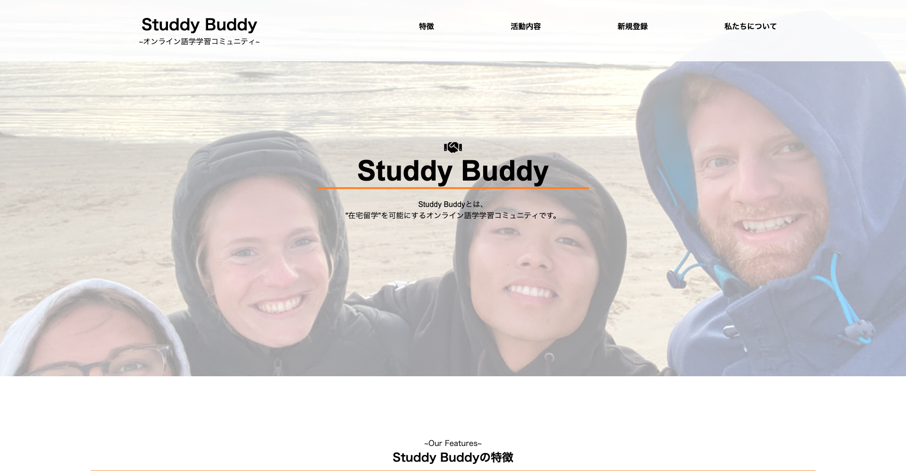

Works
-

Studdy Buddy.
HTML / CSS(SCSS) / Java Script(JQuery)
実際に活動しているサイトです。 ”在宅留学”を実現するコミュニティ。新型コロナウイルスの影響で、対面授業や海外留学も中止となり、本当はあるはずだった英語を話す機会が激減しました。 このような状況下でも ”英語を使い続けていたい”という高い意識を持った生徒はたくさんいると思います。 そのような共通の目的を持った生徒をつなげる場を作りたいという思いから、Studdy Buddyを開設しました。 留学先で知り合った現地の学生や、日本の友人に参加の協力を訪ねスタートさせました。 そして友達から友達へこの活動がつたえていき、参加者の和を広げています。
課題：現在学習中のサーバサイド言語で、チャット機能、ブログ投稿などの機能を付け加えていきたい。
-
BUT FIRST COFFEE.
HTML / CSS(SCSS) / Java Script(JQuery)
架空のカフェサイトを作りました。使用する色の種類をなるべく少なくし、モノトーンカラーを使うことで、ページに統一感をもたせました。 またバックグラウンドカラーに白ではなく、薄いグレーを使って落ち着いた雰囲気を目指しました。Progateで学習したJqueryをアウトプットになりました。 また、SCSSをもっと早く習得すべきだったと感じました。
反省点：jquery.bgswitcherの使い方がわからず使用できずに終わったので。次回のサイトづくりで再度挑戦したい。
-
BUT FIRST COFFEE.(PICK UP)
HTML / CSS(SCSS) / Java Script(JQuery) / PHP
架空カフェサイトのオーダーサイトを作りました。HTML／CSSやJqueryとは違い、PHPは学習にとても時間がかかりました。 PHPに関しては、現在も理解していなことだらけです。PHPのアウトプットとして制作しましたが、phpファイルの公開の仕方が未だわからないまま…。 公開できるまでは、githubのリンクを以下に載せておきます。github→https://github.com/shin6142/cafesite-pickup
反省点：Githubでphpファイルの公開の仕方がわからない…
-
SHIN YAMAGA (English Site)
HTML / CSS(SCSS) / Java Script(JQuery)
本サイトの英語版サイトを作りました。 このサイトを制作を通して、日本語と英語は、それぞれ適したフォントやテキスト揃え方があることに気が付きました。 また、英語での見出しや文章づくりをする上で、なるべく少ない語数でシンプルにまとめ、かつインパクトのある内容にすることを意識しました。（Worksページは日本語版のみ）
反省点：英語のコンテンツに適したレイアウトやフォントを学習したい。